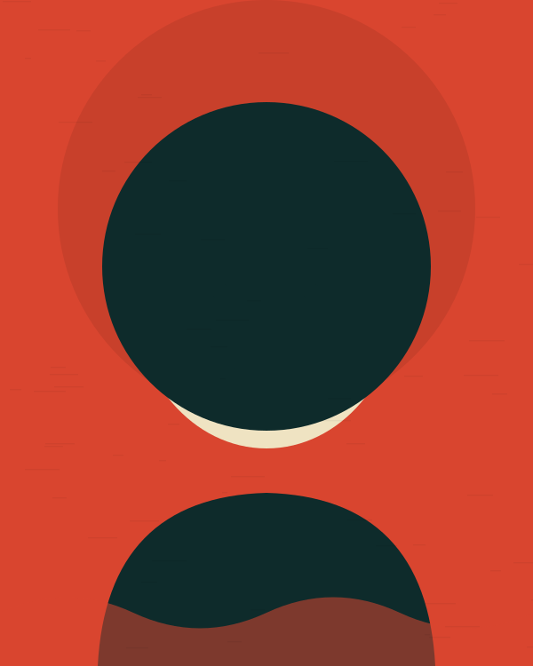
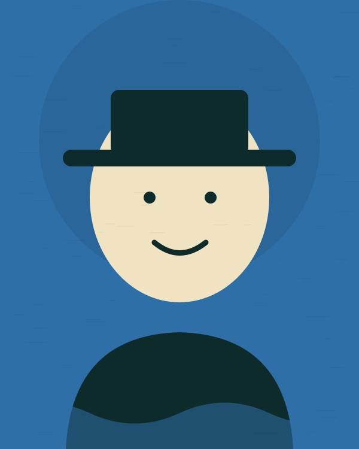
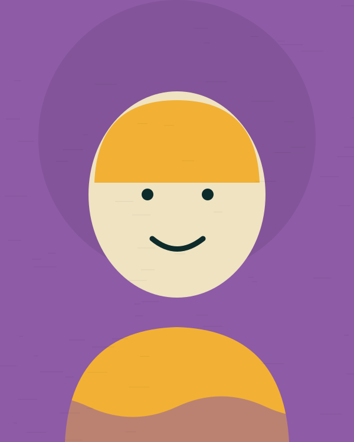
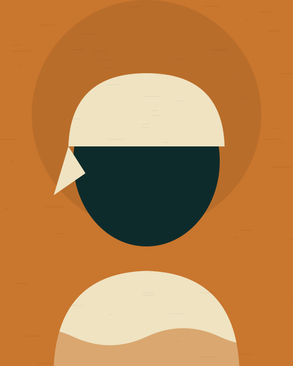
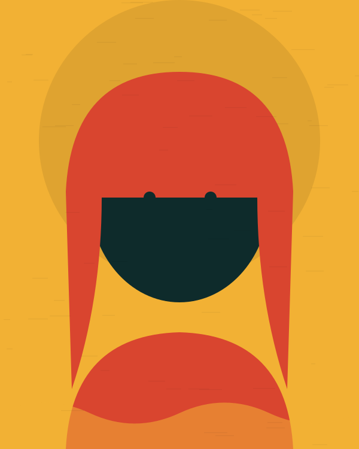
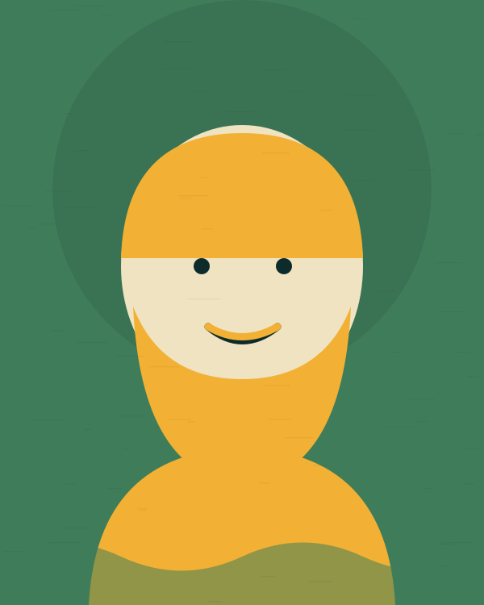
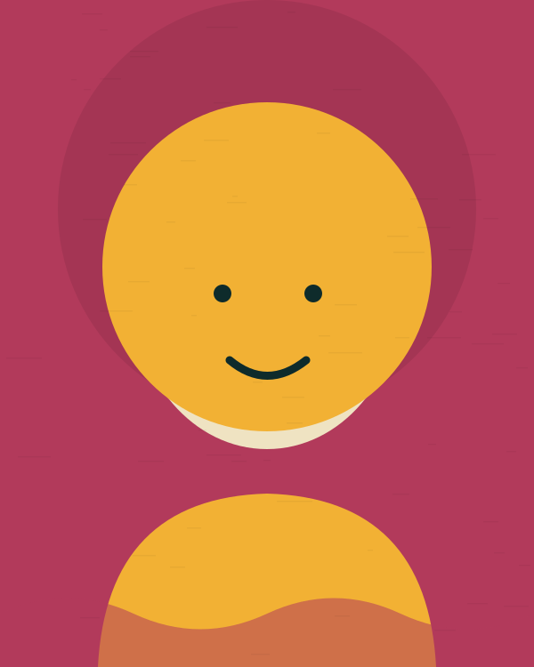
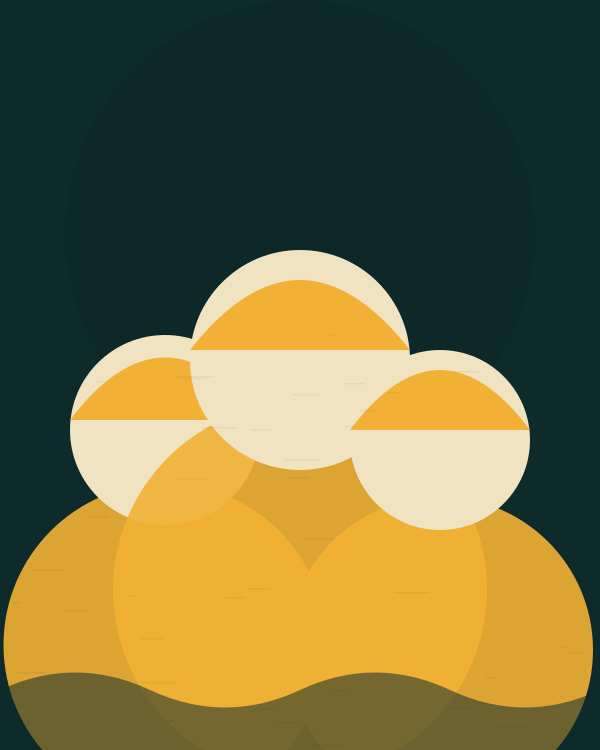
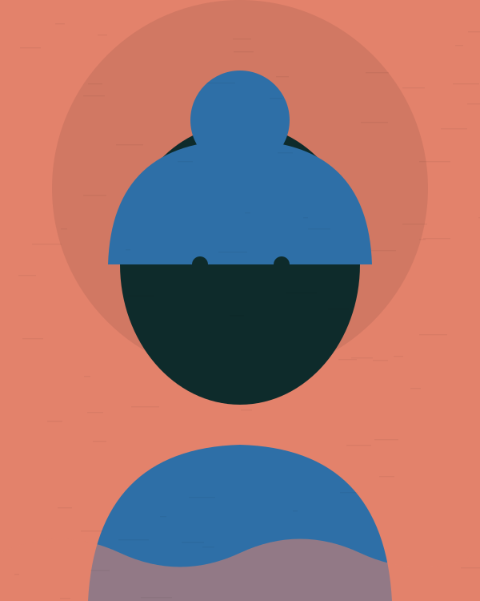
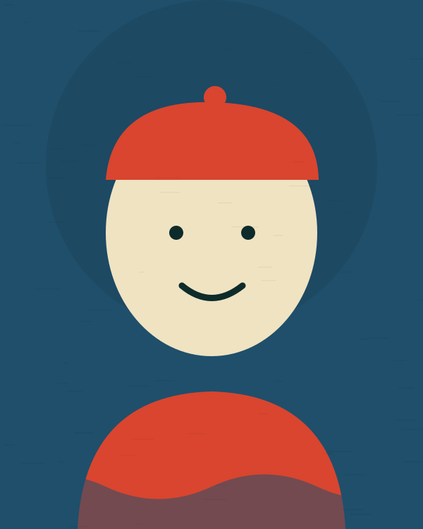

Bia Cordilheira
Sexta, 13 · 22h
Palco Cais
Dez artistas, três palcos, três noites

Sexta, 13 · 22h
Palco Cais

Sexta, 13 · 20h
Palco Cais

Sexta, 13 · 19h
Palco Mangue

Sábado, 14 · 21h30
Palco Casarão

Sábado, 14 · 23h
Palco Cais

Sábado, 14 · 19h30
Palco Mangue

Sábado, 14 · 18h
Palco Casarão

Domingo, 15 · 20h
Palco Cais

Domingo, 15 · 18h30
Palco Casarão

Domingo, 15 · 17h
Palco Mangue
Os três ficam a menos de 400 metros um do outro
No trapiche, aberto para a baía. Recebe os shows principais das três noites e comporta 4 mil pessoas.
Dentro da casa de esquina da Rua da Matriz. Som acústico, 300 lugares, entrada por senha na hora.
Sob as árvores, no fim da rua. Shows de começo de noite e as rodas que seguem depois do último set.